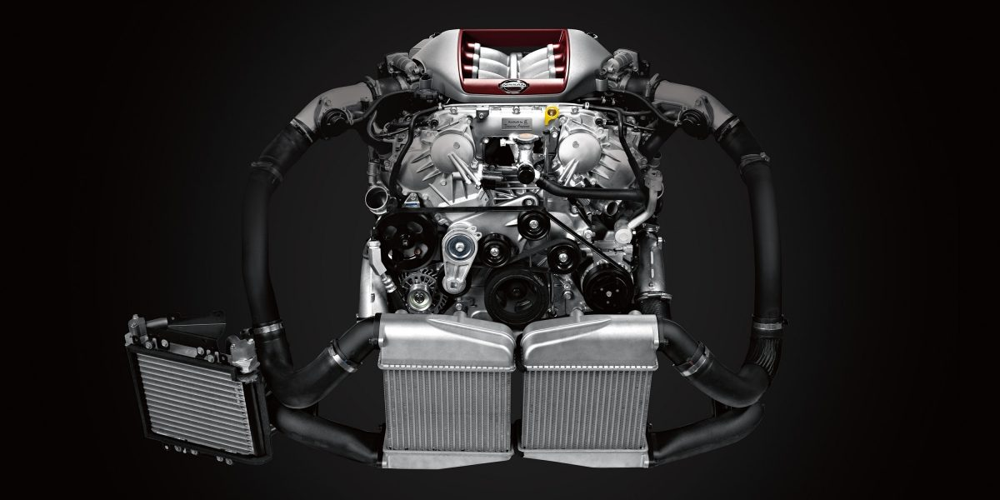

The VR38DETT is a 3.8-liter twin-turbocharged V6 engine used in the Nissan GT-R (R35). It has an aluminum-alloy block and heads, plasma-sprayed cylinder bores to reduce weight and improve cooling, and uses forged internals for durability. The engine is hand-assembled by specialized technicians called Takumi. It delivers over 600 horsepower in its NISMO variant by using larger turbochargers and optimized tuning. The VR38DETT also features a dry sump lubrication system for consistent oil delivery and integrates an intercooler system to manage heat generated by the turbochargers. It is commonly modified by tuners for higher performance, with some builds exceeding 1,000 horsepower.